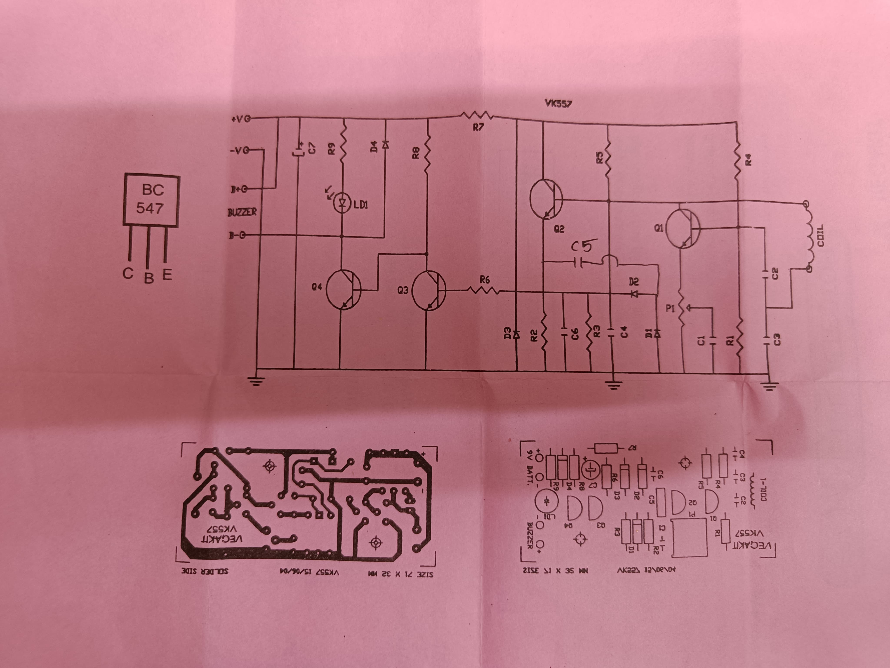

Beat Frequency Oscillator (BFO) Metal Detector
Introduction
This is a Beat Frequency Oscillation (BFO) metal detector that detects the presence of metals.
Technical Details & Approach
How It Works:
It uses two internal oscillation circuits: one has a fixed resonance frequency (reference oscillator), and the other oscillator has a detector coil which changes frequency when metal is nearby. Initially, both oscillators are adjusted to the exact same resonance frequency.
When a metal object comes close to the detector coil, its inductance changes slightly:
- Ferrous metals (like iron or steel) increase the coil's inductance due to high magnetic permeability, which causes the search oscillator's frequency to decrease.
- Non-ferrous conductive metals (like copper or aluminum) generate opposing eddy currents that reduce the effective magnetic field, causing the coil's inductance to decrease and the frequency to increase.
That change in inductance causes a shift in frequency. Because both oscillators operate at high radio frequencies, the difference between their frequencies becomes an audible beat frequency (Δf = |f1 − f2|).
This difference frequency falls squarely in the human audible range, which is then amplified by an NPN transistor and sent to a buzzer—that buzzing noise is the sound we hear whenever metal is detected.

Figure: Complete Circuit Schematic — showing dual LC tank oscillators, search coil detector, heterodyne mixer, NPN transistor audio amplification stage, and buzzer output.
Components: I don't remember.
Note: Demo video will be uploaded on YouTube and linked here soon.
References & Links
- › Beat Frequency Oscillator (BFO) Metal Detection Principles & LC Resonance
- › Heterodyne Signal Mixing & Inductive Search Coil Physics